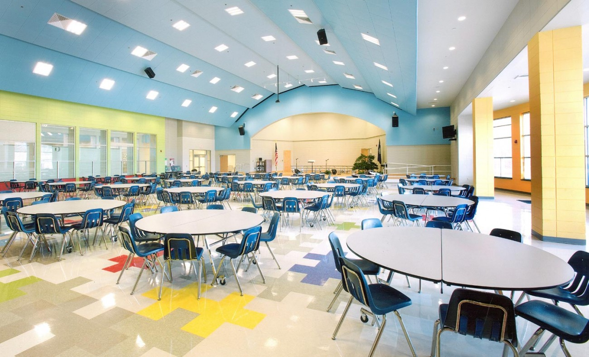
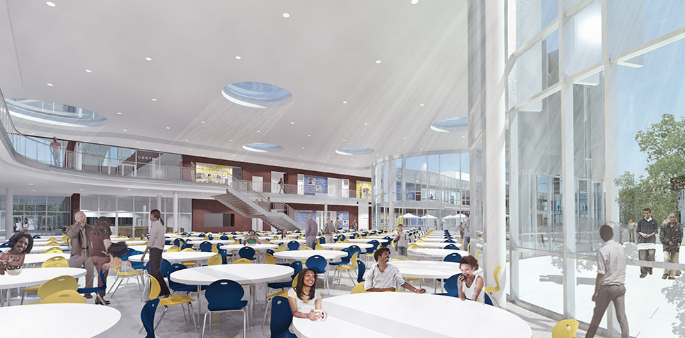

Northvale University of Technology EXPANDING YOUR FUTURE | ||||
CAFETERIAFrom the outside, Northvale’s Cafeteria looks like the other buildings on the historic street. The building is painted a rich forest green with gold trim and a wood sign hanging outside written, "Northvale’s Cafeteria...where different is cool" in purple with the school logo behind it.
 Kitchen doors can be seen from there; they are silver with round windows in them. A hall to the far left leads to the bathrooms and payphones. A door marked “Staff only” leads down to the basement and is kept locked on most occasions. Seating is provided by a hostess and orders are taken at the tables and delivered by the waitress or waiter. Original paintings are displayed throughout the dining rooms and bar. The paintings are all local artists to purchase. For artist information see the artist bio displayed in the coffee bar and if you want to hang a painting in this fine cafeteria, you have to contact the administration by either visiting personally or calling one of these numbers.
 |
||||